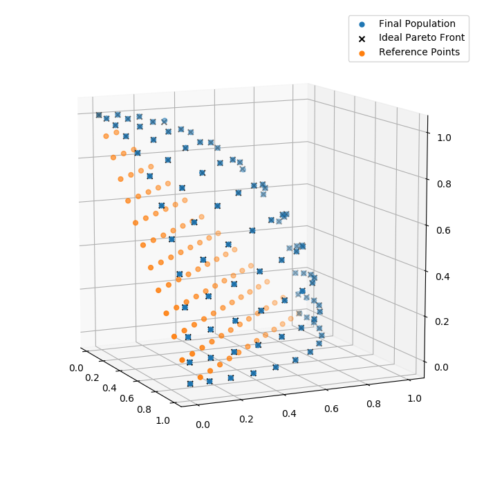

An evolutionary algorithm with NSGA-III selection to optimize individual age, fitness, and complexity through symbolic regression. With a DFT dataset of 863 unique carbon allotrope configurations drawn from 858 carbon structures, the generated potentials are able to predict total energies within ±7.70 eV at low computational cost while generalizing well across multiple carbon structures. The code is open source and available at http://www.github.com/usccolumbia/mlpotential.
Neural network potentials (NNPs) have been able to simulate systems containing thousands of atoms with near density-functional-functional theory (DFT) levels of accuracy Several physical properties of atomic systems have been approximated to a high degree of accuracy by NNPs, including lattice thermal conductivity, solvationenergy, density, porosity, and hardness The inherent black-box design makes analysis of the physical properties considered by these models very difficult. This issue is addressed by regression models by producing intelligible mathematical expressions.
Genetic programming simulates the biological process of natural selection in a computer program. The potentials produced here achieved a minimum RMSE of 6.915 eV for their energy calculations. They do not yet yetpossess the accuracy of kernel-based GAPs, which have achieved RMSE scores as low as 0.002 eV/atom for certain crystalline carbon structures. They predict that the introduction of threeand many-body terms to the GPSR framework will greatly improve the accuracy.
The evolutionary algorithm contains the main logic loop of the evolutionary process. Individuals in an initial populationare evaluated by the evaluation function. The cumulative best individual after each generation is preserved in the "hallof fame" Offspring are produced by applying the crossover and mutation operations to the current population. Pareto optimization algorithm is used to select which individuals will be preserved into the following generation. Pseudocode for the evolutionary algorithm is provided in Algorithm 1.2.4.5 (Pmut) and crossover probability)
In each generation, offspring are produced and evaluated, then a selection algorithm is applied to the whole population to retrieve an updated population. Each inidividual’s age is incremented for every generation it has successfully survived. A simple age-fitness evolutionary algorithm is based on a population size (µ) and initial initial population (pop) The algorithm is called GeneticOps and requires parameters such as an initial population size, age, population age and number of offspring.
The population size (µ) and the number of generations to evaluate (Ngen) contribute to the runtime of the evolutionary algorithm. These two parameters must be balanced to explore the hypothesizer space effectively. The minimum and maximum depth of new individuals generated are specified by Dmin and Dmax, respectively. The parameters were selected arbitrarily based on a limited number of validation runs. Systematic optimization of these parameters would likely produce more accurate regression models and reduced runtime. The evolutionary algorithm implements components of an age-based optimization algorithm.
The evolutionary algorithm contains multiprocessing support for parallel evaluation of individuals in the same generation. They used strongly typed genetic programming to run the genetic algorithm on a strictly defined set of primitives and terminal values. The best performing model, GP7, was trained for a total of 45.5 hours on the Hyperion high performance computing (HPC) cluster at the University of South Carolina to train the model cross 40 2.8GHz nodes simultaneously. The model is then trained as the base truth for training, and all parameters are assigned negative weights.
The genetic algorithm presented here demonstrates the ability of GP-based regression models to rapidly identify DFT-approximations across a diverse set of carbon configurations with lower computational complexity than existing GAPs. The evolutionary process of the potentials was characterized by a rapid convergence to pseudo-optimal solutions within a few hundred generations, followed by slower incremental improvements in the later generations. Figure 6 shows the progression of the r2 and RMSE scores of the highest performing individual over time in the GP instance that produced GP2.
GP1, GP2, and GP4 follow a similar form of a constant C1 divided by a summation over the interatomic distances subtracted from some constant factors C2 minus another constant factor C3. In these cases, essentially null terms like the one shown in equation (6) arise as a byproduct of the generational process. Null terms are a necessary consequence of the evolutionary algorithm and can be safely removed from the model without impacting overall performance. The primitive set specified contains terminals for threeand many-body interactions, or consideration of non-local interactions, the potentials will be limited in accuracy.
The GP-based models performed with similar accuracy and high correlation to target energies (r2 > 0.99) Across all fthe partitions, the models’ performances in each scenario. They conclude that the produced regression models generalize well to novel carbonuclearstructures. This suggests the identification of underlying physical properties by the models. A PREPRINT APRIL 5, 2022 April 5, is the date of the publication of this article on this article.
Trees were constrained by GP hyperparameters to a minimum depth of 1 node and maximum depth of 13 nodes. Trees had no constraints on how many nodes (complexity) was assigned a negative weight in a 3-tuple. The total number of nodes (Complexity) in the tree was assigned negative weight. The genetic algorithm was used to predict the future of the genetic algorithm. The algorithm was developed in the 1970s and 1980s. The results were published on April 5, 2022, in accordance with the publication of the Genetic Algorithm.
Each model’s fitness is characterized by its RMSE(eV/atom) relative to target DFT calculations and complexity (number of nodes) Non-dominated individuals include GGP1, GP4, GP6, and GP7. Each model's RMSE (eV) and number of nodes are characterized by RMSE/atom/atom, RMSE, RSE/RSE/RAF, RASF, PARSF, SPF/RASF and SPF.
Early generations make the largest and most abrupt improvements in the model. Later generations involve smaller and less frequent modifications to the best-individual as the space of improvements over the current model becomes smaller and harder to identify. Red points along the Pareto front, representing non-dominated individuals, include GP1, GP6, and GP7. Red points are shown to represent non-dominant individuals, such as GP1 and GP6. Red is shown to indicate that GP1 is the most dominant individual in the evolutionary process.
The GP7 regression model displays the highest accuracy of the potentials produced here, calculating energy within±7.70 eV of the DFT target values. Future works may explore the expansion of the GP primitive set to contain a terminal for triplets to represent the threeand many-body interaction term. The complexity of generated potentials will necessarily increase as a consequence of considering three-and-many-body interactions. The code referenced in this paper is open source and available at https://github.com/usccolumbia/mlpotential.